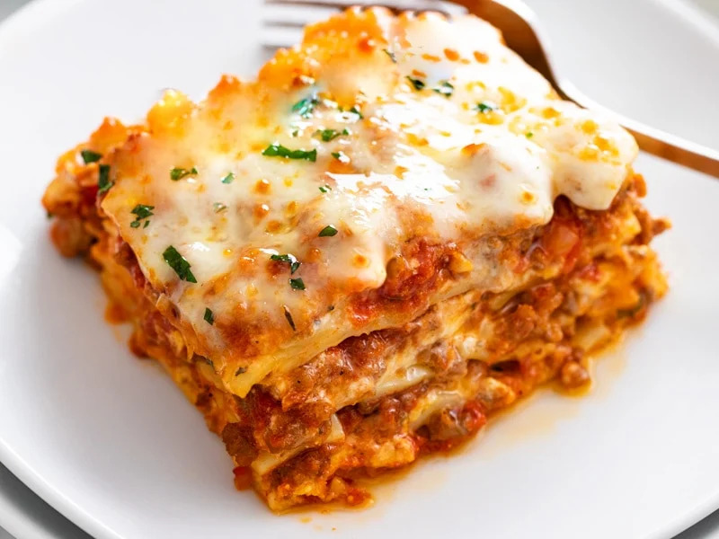

Lasagna

Description
This recipe will show you how to make the best lasagna
ever. You will be so surprised that Lasagna could even taste
this good. Lets get it.
Ingredients
- 12 lasagna noodles, plus extra in case of breakage
- 2.5 cups mozzarella cheese
- Preheat oven to 375°.
- Begin boiling a large pot of salted pasta water for the
lasagna noodles. Once a rapid boil is reached, cook the noodles
to al dente according to package instructions. (Set a timer to
ensure you don’t overcook them.) Gently stir with a wooden spoon
throughout cooking to prevent the noodles from sticking. Drain
and rinse with cold water until noodles are completely cool
-
Lay the cooled noodles flat on wax or parchment paper while you
begin assembling the lasagna.